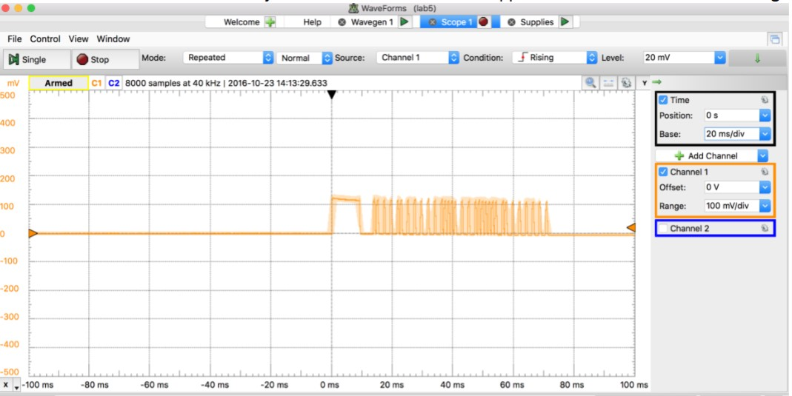
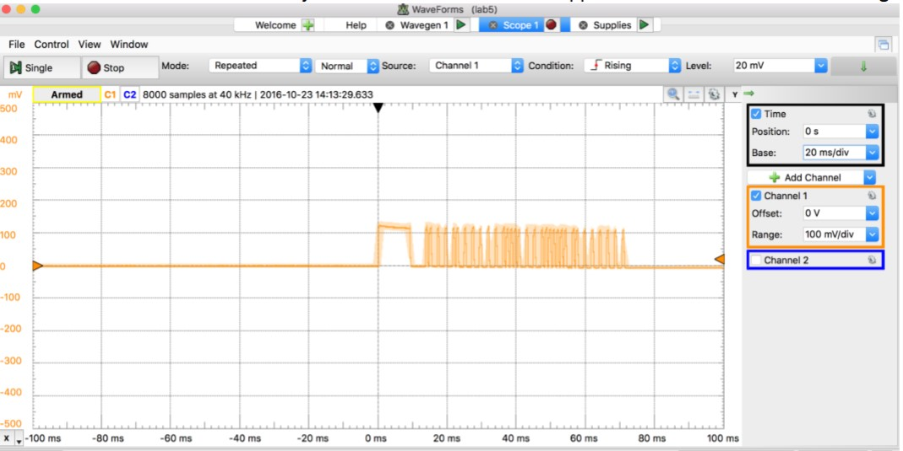
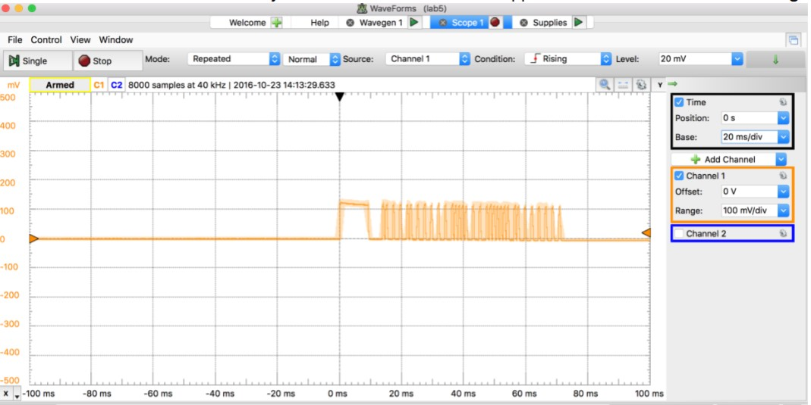

In this project, I explored multiple practical applications of diodes across three distinct parts.
Part I involved characterizing the I-V behavior of an IR LED and IR photodiode using a custom test circuit. I measured their forward-bias turn-on voltages and observed how IR illumination caused a downward shift in the photodiode’s I-V curve, demonstrating light-sensitive behavior.
To measure the effect of IR illumination on the photodiode’s I-V curve, I first recorded the I-V characteristics without any IR light. Then, I set up a separate circuit with a 5V supply and 100 Ω resistor to power an IR LED. I aimed the LED directly at the photodiode and measured the I-V curve again.
With the IR light on, the I-V curve shifted downward, indicating increased photocurrent due to IR exposure. Blocking the light caused the curve to return to its original position, confirming the photodiode’s response to IR. I quantified the change by comparing current values at specific voltages with and without illumination.

The heart beat through a finger is shown down below. Equation to find heart rate: 1/(change in time) * 60 (for BPM)
The heart beat through a finger is shown down below, the rate was achieved via exercise (A friend and I maxed out on pushups and jumping jacks)
Overall, a fun project!